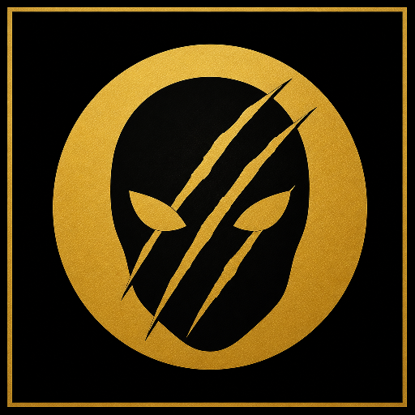

MASKCLAW GitHub█░ █░█████░█████░█░ █░█████░█░ █████░█░ █░█░ █░ ██░██░█░ █░█░ █░ █░ █░ █░ █░ █░█░ █░█░ █░ █░█░█░█████░█████░███░ █░ █░ █████░█░█░█░█░ █░ █░ █░█░ █░ █░█░ █░ █░ █░ █░ █░█░█░█░█░█░█░ █░ █░█░ █░ █░█░ █░ █░ █░ █░ █░██░██░█░█░█░ █░ █░█░ █░█████░█░ █░█████░█████░█░ █░█░ █░ █░█░
MaskClaw privacy proxy
forked from NVIDIA NeMo Switchyard
Prompts hit MaskClaw first. Secrets and PII become stable placeholders, the redacted request is routed, then originals are restored on the way back.
The desktop app


Desktop
Windows 10/11 app. HOME, MASKED, MODELS, SETTINGS. Point Cursor, Continue, Open WebUI, or any OpenAI-compatible client at the proxy.
Appliance
Raspberry Pi 5 box on the LAN. Same privacy engine, served on the network for the rest of the desk.